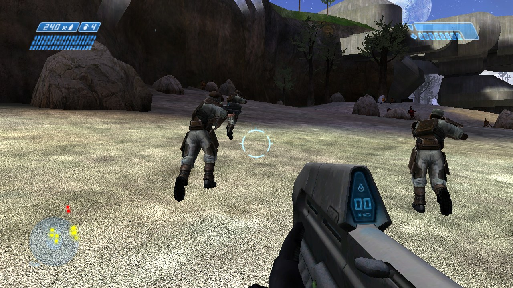
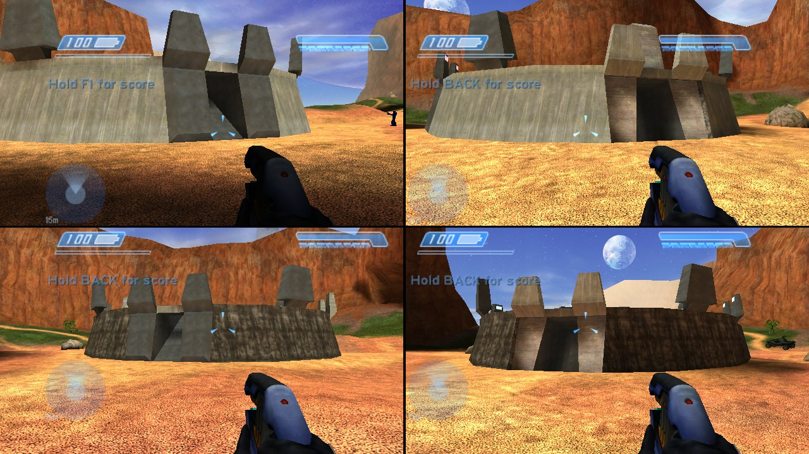
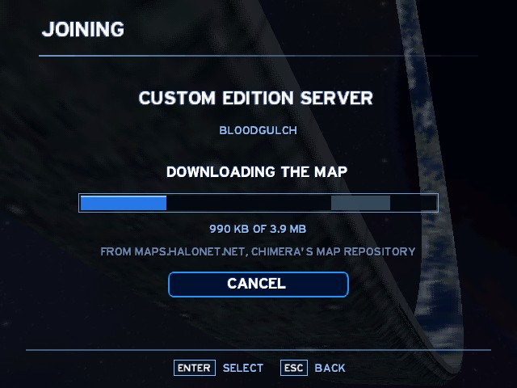
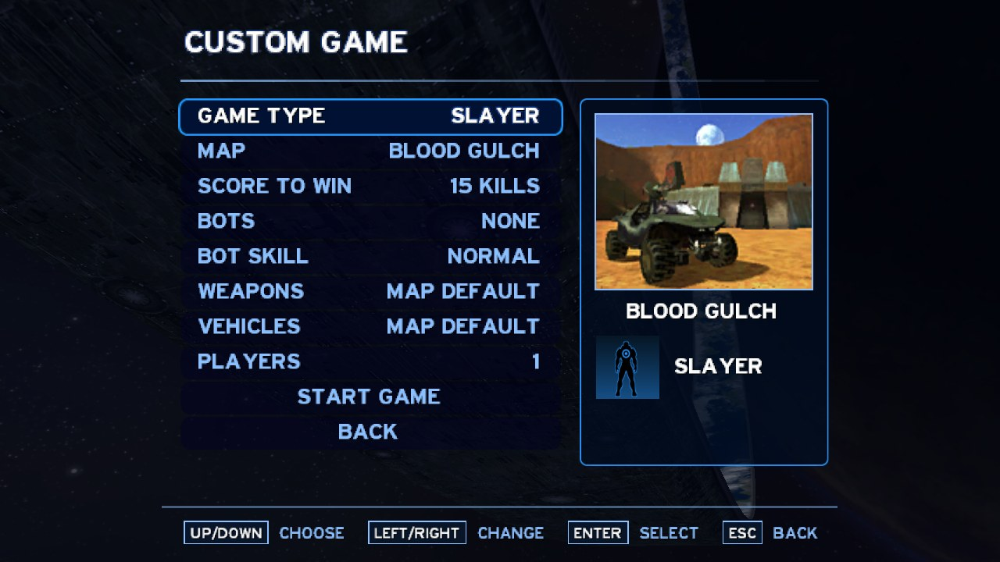
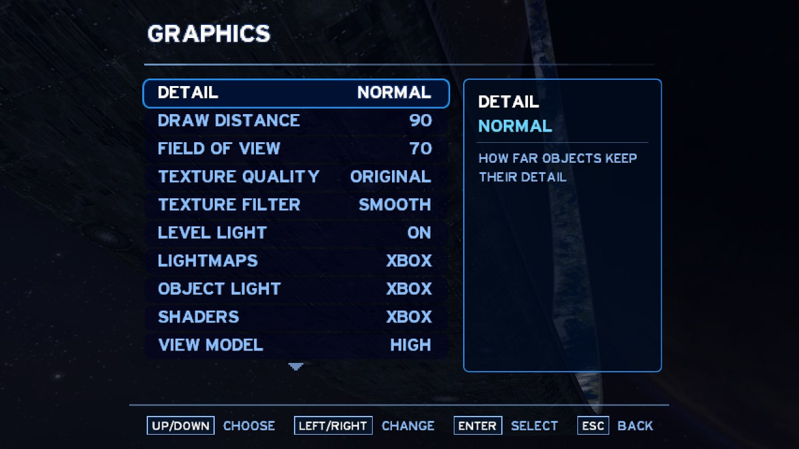
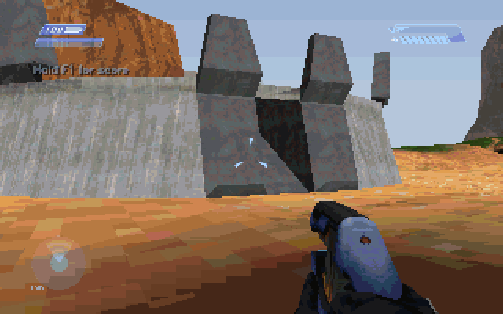
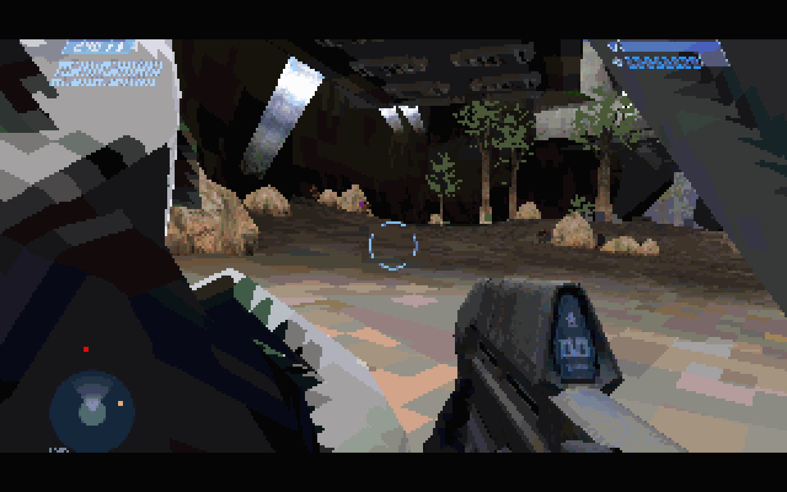
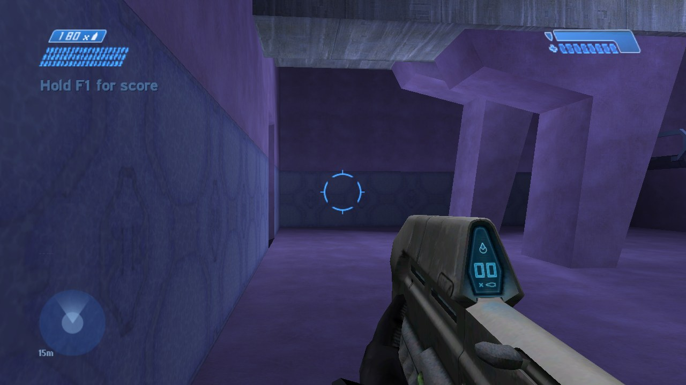
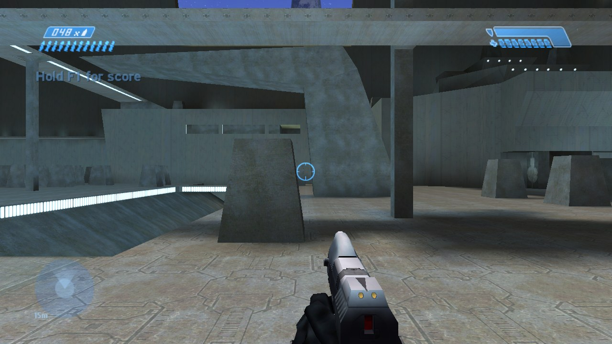

One game, four looks
Pick a scene and a renderer. The software renderer is what DOS draws; OpenGL and Direct3D 8 draw on the graphics card, and Direct3D 8 can draw as the Xbox did, with Halo's own lightmaps, lit objects and layered shaders.

What's in it
ChupathingyCE's game code (the source port that grew out of halo-ce-universal) with a C runtime that runs on DOS and Windows 95, a renderer of its own, and both systems' hardware.
The whole game
All ten campaign levels with Halo's own scripts and cutscenes, two-player co-op, the 13 multiplayer maps with every game type, bots and Firefight.
Split screen for four
Keyboard and mouse, Xbox and XInput controllers, Windows joysticks or the DOS game port. Split-screen players can go online together too.
Online play
The online game list ChupathingyCE and OpenCE share, LAN games, invite links and Quick Join.
Custom Edition servers
Joins Halo Custom Edition 1.10 servers, and downloads a server's missing map from the repository Chimera uses.
Software rendering
8, 16 or 32-bit colour from 320x200 up, a palette made for every map, and pixel doubling for the slowest machines.
OpenGL and Direct3D 8
Full colour at any resolution with Halo's detail maps; Direct3D 8 adds the Xbox's lightmaps, object lighting and shaders.
3dfx Voodoo on DOS
A register-level driver of its own for the Voodoo Graphics: no Glide needed.
Sound Blaster
16-bit stereo on an SB16, 8-bit on older cards; Windows' wave mapper on Windows 95. Music, dialogue and effects.
Settings for any machine
Detail, draw distance, field of view, texture quality, view-model detail, frame rate up to uncapped, wide screens, rebindable keys and Halo's controller settings.
Gallery
Screenshots from HALO95.EXE at 1280x720, and DOS's 320x200 in 256 colours.








Install
About five minutes, plus copying the maps.
Download the release
Get
halo-dos-<version>.zipfrom the latest release and unpack it. Everything is in itsHALOfolder:HALO.EXEfor DOS,HALO95.EXEfor Windows, the launchers and the manual (README.TXT).Add your Xbox maps
Copy the 24
.mapfiles from themapsfolder of your Halo: Combat Evolved Xbox disc intoHALO\MAPS. From a disc image, use an Xbox image tool such as extract-xiso; if you play ChupathingyCE, itsmapsfolder holds the same files. Halo PC's maps don't work here.Optional: Halo Custom Edition's
mapsfolder goes inHALO\MAPS_CE, for CE servers and CE maps.Run it on Windows
Run
RUN-WIN95.BATorHALO95.EXE(Windows 95 to 11). Alt+Enter switches between a window and full screen. Windows 95 needs Windows' TCP/IP installed (Control Panel → Network).…or on DOS
On a DOS machine: load your mouse driver (and your network card's packet driver, for online play), then run
PLAY. On a PC, install DOSBox-X and runRUN-DOS.BAT; unpack DOSBox-X's MinGW portable build into aDOSBox-Xfolder beside the game for networking.
What it needs
| DOS (HALO.EXE) | Windows (HALO95.EXE) | |
|---|---|---|
| Processor | A Pentium with an FPU; 133 MHz plays at 320x200, faster is better | A Pentium or later |
| Memory | 64 MB (what it was tested with) | 64 MB |
| System | MS-DOS 6.22 or 7.x; Windows 9x's MS-DOS mode; DOSBox-X | Windows 95 with TCP/IP, 98, Me, or any later Windows |
| Display | VGA for 320x200 in 256 colours; VESA 2.0 with a linear frame buffer for more; a Voodoo Graphics | Any; OpenGL 1.1 or DirectX 8.0a for the card renderers |
| Sound | Sound Blaster or compatible (optional) | Any wave-out device (optional) |
| Network | A packet driver (optional) | Winsock (optional) |
| Disk | About 2 GB of maps, plus the unpacked map cache | The same |
Online
MULTIPLAYER → ONLINE: Quick Join, Browse Games, Host a Game, and Players for split screen online.
With ChupathingyCE and OpenCE
Their online game list is this game's too: its players can join your games and you theirs. Hosted games write an invite link to INVITE.TXT; a link put in JOIN.TXT joins that game at start.
Halo Custom Edition servers
CE 1.10 servers appear in the list. With Custom Edition's bitmaps.map, sounds.map and loc.map in MAPS_CE, joining downloads a server's missing map. Servers that check CD keys refuse this game.
Build it yourself
On Windows 10 or 11, with LLVM, Open Watcom 1.9, nxdk's PDCLib sources, a Windows SDK, Python and Ninja. The README has the details.
git config --global core.longpaths true git clone --recursive https://github.com/JackTulli/halo-dos cd halo-dos python tools/dos_hooks.py python tools/dos_build.py ninja -f build/dos/build.ninja dos win95 launchers